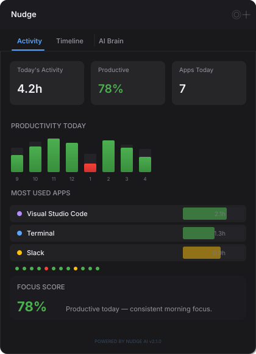

v2.1.0 — Now with on-device ML
Catch the moment
you start drifting.
Nudge uses a local AI model trained on your habits to interrupt you when you're genuinely losing focus — not on a fixed schedule. No cloud, no accounts, no screenshots.
Self-contained binary, no runtime needed · See all releases

